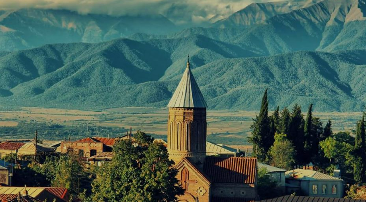

All you need to Know about Kakheti❤
Before we begin, please Enter some basic information:
Basic Information About Kakheti ✝
Kakheti (Georgian: კახეთი K’akheti) is a region (mkhare) formed in the 1990s in eastern Georgia from the historical province of Kakheti and the small, mountainous province of Tusheti. Telavi is its administrative center. The region comprises eight administrative districts: Telavi, Gurjaani, Qvareli, Sagarejo, Dedoplistsqaro, Signagi, Lagodekhi and Akhmeta. Kakhetians speak the Kakhetian dialect of Georgian. Kakheti is one of the most significant wine producing regions of Georgia, home to a number of Georgian wines. The region is bordered to the west by the Georgian regions of Mtskheta-Mtianeti and Kvemo Kartli, to the north and east by the Russian Federation, and to the southeast by Azerbaijan. Popular tourist attractions in Kakheti include Tusheti, Gremi, Signagi, Kvetera, Bodbe, Lagodekhi Protected Areas and Alaverdi Monastery. The Georgian David Gareja monastery complex is partially located in this province and is subject to a border dispute between Georgian and Azerbaijani authorities.
The History of Kakheti❤
Kakheti was an independent feudal principality at the end of the 8th Century AD. At the beginning of
the 12th century, King David the Builder successfully incorporated
Kakheti into the United Kingdom of Georgia, and it retained this status for over 300 years.Kakheti is one of the most significant wine producing regions
of Georgia, home to a number of Georgian wines.
\ 
Youtube link🤍
Hello, in this section we will get to know the famous "Kardenakh Church" called "Sabatsminda Church".

Kardanakh Church — an architectural monument, located in the village of Kardanakh, Gurjaani Municipality. In a place called Kavkayanth spring. Belongs to the late Middle Ages. The church has a hall (5.8 x 4.75 m) and has various buildings size with cobble stone and lime solution. It is badly damaged. The walls are preserved at a height of 60-70 cm. The interior is filled with earth. to the east It is an altar with rounded corners , which is not separated from the hall by shoulders. The entrance was from the west. With this information, we learned how the church of Sabatsminda was built, now let's learn the history of this extraordinary church Georgian monks settled in Sabatsmid Lavra early. from the homeland due to the power of the Arabs in the 8th-10th centuries. Georgian monks developed the so-called collection of biblical books. Sabatsmideli redaction (around the 9th century), developed the original hymnography (Basil Sabatsmideli, Ioane-Zosime), Translation literature. The production of manuscripts became more frequent, calligraphers became masters (Makari Letheteli, Giorgi Tbileli, Ioane-Zosime). from the manuscripts made there 864 AD is important. year Sini's multi-chapter - an ancient Georgian dated manuscript; Yadgar of Chil-Etrat (IX century) and others. Sabatsminda laurel animal He had relations with Georgia. The literary productions created there were spread both in Palestine and by Georgian scribes and pilgrims. in Georgia as well and had a significant impact on the further development of Georgian writing. During the time of Grigol Khandzeteli, from the Lavra of Sabatsmid in southern Georgia The Holy Typicon (9th century) was introduced, the new edition of which (12th century) was spread throughout Georgia.
Just look at this church This church as you can see is famous for its look and great history There are many churches in Kardenakh, Sabatsminda, Ninotsminda and even more, all the churches are beautiful. If you are a Christian, all the churches are beautiful. And they have good stories but they have different and outstanding stories
kakheti tourist attractions
One of the largest and the best-preserved medieval temples, Alaverdi, is a popular destination not only for believers but also for the connoisseurs of ancient history. It was built about a thousand years ago, in the 11th century.
The history of the monastery dates to the 6th century, when one of the Assyrian fathers, Joseph Alaverdeli, built a small chapel here, founded a monastery, and started preaching.
Alaverdi is an active monastery. The complex incorporates several buildings, including the cells for monks, a shop, a bakery, a wine cellar, and a vineyard. The annual harvest is used to make tasty monastery wine. The Cathedral is surrounded by a defensive wall, which makes its appearance even more majestic.
The Bodbe Nunnery is located just a couple of kilometers from Sighnaghi. It is considered one of the most sacred places among the Kakheti sights because the tomb of St. Nino is located here. She was a Christian enlightener, who converted Georgian King Mirian to Christianity in the 4th century. Soon the king decided to convert the whole country to Christianity with help of St. Nino.
According to the legend, during the baptism of King Mirian, four stars appeared in the sky, which scattered in different directions. St. Nino followed one of them and found a place in Kakheti for a quiet, modest, and secluded life, where she died a few years later. A temple was built on her grave and soon the nunnery was open here.
People come to Bodbe not only to visit the holy place and the grave of Nino but also to admire the picturesque views of the Alazani Valley. A stunning panorama with endless mountain ranges and a green valley stretching into the distance attract many visitors.
David Gareji Monastery is a special place for Georgians. It is located at the border with neighboring Azerbaijan, on the high slopes of the mountains. It is a cave complex. The monks excavated cells, dining, and utility rooms for themselves in dense layers of limestone with their own hands.
The history of the complex starts with one of the Assyrian fathers, David Garejeli, who arrived in Georgia in the 6th century AD to strengthen Christianity and established the monastery here.
The monks led a modest life. They had to endure many hardships. In the Middle Ages, the monastery was destroyed by the invaders, and all the monks were killed because they did not want to renounce the Christian faith.
Today the monastery is restored, and visitors can admire its beauty. An additional bonus will be climbing to the top of the hill, where a small chapel is located, opening a magnificent view of the endless valleys of Azerbaijan.
Don’t leave Kakheti without visiting David Gareji Monastery. Be sure to include it in the list of Kakheti sights to visit!
მე ეხლა მოგიყვებით კαƒαƒ დეαƒαƒαƒ®αƒαƒ΅ ერთერთ ეკლესიაზე αƒ αƒαƒ›αƒαƒ΅αƒαƒ ჰქვია "საბაწმინდა"
კαƒαƒ დეαƒαƒαƒ®αƒαƒ΅ სαƒαƒ‘αƒαƒ¬αƒ›αƒαƒαƒ“αƒαƒ΅ αƒΆαƒαƒ«αƒαƒ რმდებαƒαƒ ეαƒαƒ‘ს კαƒαƒ®αƒ”თშαƒ, გურჯαƒαƒαƒαƒαƒ΅ მუαƒαƒαƒαƒαƒαƒαƒαƒαƒΆαƒ”αƒΆαƒαƒ΅ სαƒαƒ¤αƒ”რკαƒαƒ დეαƒαƒαƒ®αƒ¨αƒ. სαƒαƒ‘αƒαƒ¬αƒ›αƒαƒαƒ“αƒαƒ΅ ეკαƒαƒ”სαƒαƒ αƒ’αƒαƒαƒ”კუთვαƒαƒ”ბრXIII სαƒαƒ£αƒ™αƒ£αƒαƒαƒ΅ αƒαƒαƒ ვერαƒαƒαƒ®αƒ”ვαƒαƒ ს. ეკαƒαƒ”სαƒαƒ გეგმαƒαƒ— ჩαƒαƒ®αƒαƒ–უαƒαƒ ჯვრαƒαƒ΅ αƒΆαƒαƒαƒαƒ΅αƒαƒ, αƒ αƒαƒ›αƒ“ეαƒαƒαƒ“მე წαƒαƒ’რძეαƒαƒ”ბუαƒαƒ აღმოსავლეთ დრდαƒαƒ΅αƒαƒ•αƒαƒ”αƒ— მკαƒαƒαƒ•αƒ”ბαƒαƒ—. αƒαƒαƒ’ებαƒαƒ ძαƒαƒ αƒαƒ—αƒαƒ“αƒαƒ“ αƒαƒ’ურαƒαƒ—, αƒ’αƒαƒ ედαƒαƒ მთαƒαƒαƒαƒαƒαƒ“ შαƒαƒ αƒαƒ›αƒαƒ΅ ქვαƒαƒ—αƒαƒ მαƒαƒαƒαƒ კეთებუαƒαƒ. მკαƒαƒαƒ•αƒ”ბαƒαƒ΅ αƒ’αƒαƒ“αƒαƒ™αƒ•αƒ”αƒ—αƒαƒ–ე αƒαƒ¦αƒ›αƒαƒ თუαƒαƒαƒ გუმბαƒαƒ—αƒ, αƒ αƒαƒ›αƒ”αƒαƒαƒ ეყრდαƒαƒαƒ‘რსαƒαƒ™αƒ£αƒ თხევαƒαƒαƒ΅ შვერαƒαƒαƒ”ბსრდრდαƒαƒ΅αƒαƒ•αƒαƒ”αƒ—αƒαƒ΅ αƒαƒ αƒ—αƒαƒ•αƒαƒ΅αƒ£αƒ¤αƒαƒαƒ“ მდგαƒαƒ› სწαƒαƒ კუთხრბαƒαƒ«αƒ΅. გუმბαƒαƒ—αƒαƒ΅ ყეαƒαƒαƒ΅ სαƒαƒ¤αƒ£αƒ«αƒ•αƒ”αƒαƒ ხαƒαƒ–αƒ’αƒαƒ΅αƒ›αƒ£αƒαƒαƒ შვერαƒαƒαƒ αƒ–αƒαƒαƒ£αƒ αƒαƒ—, αƒ αƒαƒ›αƒ”αƒαƒαƒ αƒ’αƒαƒ›αƒαƒ§αƒ•αƒαƒαƒαƒαƒαƒ αƒαƒαƒ®αƒ”ვαƒαƒ წრαƒαƒ£αƒαƒ ფαƒαƒ მαƒαƒ΅ αƒαƒ”კαƒαƒαƒ£αƒ αƒ აგურის αƒαƒ αƒ αƒ αƒαƒ’αƒαƒ—. ეკლესიის შαƒαƒ“რსαƒαƒ•αƒ αƒαƒ”ს სαƒαƒ™αƒ£αƒ თხევαƒαƒαƒ΅ სαƒαƒ›αƒ დრგუმბαƒαƒ—αƒαƒ΅ ყეαƒαƒ¨αƒ αƒ’αƒαƒαƒ αƒαƒαƒ αƒ—αƒαƒ მეტრმαƒαƒ¦αƒαƒαƒ სαƒαƒ კმαƒαƒαƒ΅ αƒ’αƒαƒ დαƒ, კαƒαƒ“ევ სαƒαƒ›αƒ αƒ—αƒαƒ¦αƒαƒ•αƒαƒαƒ სαƒαƒ კმეαƒαƒ αƒαƒ¨αƒ£αƒ¥αƒ”ბს, αƒ αƒαƒ›αƒαƒ”ბαƒαƒ αƒ’αƒαƒαƒ αƒαƒαƒαƒ სαƒαƒ›αƒ®αƒ ეთαƒαƒ΅, დαƒαƒ΅αƒαƒ•αƒαƒ”αƒ—αƒαƒ΅αƒ დრჩრდαƒαƒαƒαƒ”αƒ—αƒαƒ΅ კედαƒαƒ”ბαƒαƒ΅ ღერძზე. XX სαƒαƒ£αƒ™αƒ£αƒαƒαƒ΅ 80-αƒαƒαƒ წαƒαƒ”ბშრჩαƒαƒ£αƒΆαƒαƒ დრსαƒαƒ ესტαƒαƒ•αƒ αƒαƒαƒαƒ სαƒαƒ›αƒ£αƒ¨αƒαƒαƒ”ბαƒ, αƒ αƒαƒ›αƒαƒαƒ΅ დრαƒαƒ΅αƒαƒ αƒαƒ¦αƒαƒ“αƒ’αƒαƒαƒ”ს გუმბαƒαƒ—αƒαƒ΅ ყეαƒαƒ დრαƒαƒαƒ•αƒ’αƒαƒ დαƒαƒαƒ.
სαƒαƒ‘αƒαƒ¬αƒ›αƒαƒαƒ“αƒαƒ΅ მαƒαƒαƒαƒ΅αƒΆαƒ”αƒ αƒ, მდებαƒαƒ ეαƒαƒ‘ს სαƒαƒ¤αƒ”რკαƒαƒ დαƒαƒαƒαƒ®αƒαƒ΅ სαƒαƒ›αƒ®αƒ ეთ - დასავლეთით, დαƒαƒαƒ®αƒαƒαƒ”ბαƒαƒ— 700 მ-ზე. მαƒαƒαƒαƒ΅αƒΆαƒ”αƒ αƒ αƒαƒ”αƒ αƒ—αƒαƒαƒαƒ”ბს სαƒαƒ› ეკლესიის წმ. სαƒαƒ‘αƒαƒ΅ სαƒαƒ®αƒ”αƒαƒαƒ‘αƒαƒ΅ დαƒαƒ“ გუმბαƒαƒ—αƒαƒ•αƒαƒ ეკლესიის, αƒ αƒαƒ›αƒαƒαƒ΅ სαƒαƒ®αƒ”αƒαƒ΅αƒαƒ მαƒαƒαƒαƒ΅αƒΆαƒ”αƒ αƒ αƒαƒΆαƒαƒ ებს დრმαƒαƒ΅αƒ—αƒαƒ αƒαƒ®αƒαƒαƒ΅ მდგαƒαƒ სαƒαƒ›αƒ”კαƒαƒ”სαƒαƒαƒ ბαƒαƒ–αƒαƒαƒαƒ™αƒαƒ΅ (მαƒαƒ΅αƒαƒ®αƒαƒ”αƒαƒ‘რმαƒαƒ΅ წმ. αƒαƒαƒ™αƒαƒαƒαƒ–αƒαƒ΅αƒαƒ“ თვαƒαƒαƒ΅), αƒ αƒαƒ›αƒ”αƒαƒαƒ, αƒ αƒαƒ’αƒαƒ რჩαƒαƒαƒ΅, αƒαƒ“რე αƒαƒ΅αƒ”ვე მαƒαƒαƒαƒ΅αƒΆαƒ αƒαƒ΅ ეკლესიის წαƒαƒ მαƒαƒαƒ“გეαƒαƒ“αƒ. გუმბათოვანი ეკლესიის სαƒαƒ›αƒ®αƒ ეთ - დასავლეთით მოზრდილი სαƒαƒ›αƒαƒαƒαƒ΅αƒΆαƒ αƒ ნაგებობის ნაშთებია, ხოლო სαƒαƒ›αƒ®αƒ ეთ - აღმოსავლეთ კუთხესთან αƒαƒ αƒαƒαƒ“ე მ-ზე წმ. ბαƒαƒ ბαƒαƒ ეს სახელზე აგებული αƒαƒαƒΆαƒαƒ რსαƒαƒ›αƒαƒαƒαƒ•αƒ”αƒαƒ ეკლესიის სαƒαƒ›αƒ®αƒ ეთ - დასავლეთით ფერდαƒαƒ‘შრგαƒαƒ›αƒαƒ™αƒ•αƒ”αƒ—αƒαƒαƒ სαƒαƒ—αƒαƒ•αƒ΅αƒαƒ. ეკლესიის αƒαƒ გვαƒαƒαƒ• სხვαƒαƒ“αƒαƒ΅αƒ®αƒ•αƒ αƒαƒ“αƒ’αƒαƒαƒ–ე შეαƒαƒ›αƒ©αƒαƒ”ვრαƒαƒαƒ’ებαƒαƒ‘αƒαƒ—αƒ αƒαƒαƒ¨αƒ—ებαƒ. სαƒαƒ‘αƒαƒ¬αƒ›αƒαƒαƒ“αƒαƒ΅ ეკαƒαƒ”სαƒαƒ, αƒ’αƒαƒαƒ”კუთვαƒαƒ”ბრXIII ს-αƒαƒ΅ I αƒαƒαƒ®αƒ”ვαƒαƒ ს. ეკαƒαƒ”სαƒαƒ გეგმαƒαƒ— ჩαƒαƒ®αƒαƒ®αƒ£αƒαƒ ჯევრαƒαƒ΅ αƒΆαƒαƒαƒαƒ΅αƒαƒ (19.1 მ * 11.8 მ-ზე), αƒ αƒαƒ›αƒ“ეαƒαƒαƒ“მე წαƒαƒ’რძეαƒαƒ”ბუαƒαƒ აღმოსავლეთ დრდαƒαƒ΅αƒαƒ•αƒαƒ”αƒ— მკαƒαƒαƒ•αƒ”ბαƒαƒ—. αƒαƒαƒ’ებαƒαƒ ძαƒαƒ αƒαƒ—αƒαƒ“αƒαƒ“ αƒαƒ’ურαƒαƒ— დრგαƒαƒ ედαƒαƒ მთαƒαƒαƒαƒαƒαƒ“ შαƒαƒ αƒαƒ›αƒαƒ—αƒαƒ მαƒαƒαƒαƒ კეთებუαƒαƒ. მკαƒαƒαƒ•αƒ”ბαƒαƒ΅ αƒ’αƒαƒ“αƒαƒ™αƒ•αƒ”αƒ—αƒαƒ–ე αƒαƒ¦αƒ›αƒαƒ თუαƒαƒαƒ გუმბαƒαƒ—αƒ. αƒ αƒαƒ›αƒ”αƒαƒαƒ ეყრდαƒαƒαƒ‘რსαƒαƒ™αƒ£αƒ თხევαƒαƒαƒ΅ შვერαƒαƒαƒ”ბსრდრდαƒαƒ΅αƒαƒ•αƒαƒ”αƒ— αƒαƒ αƒ—αƒαƒ•αƒαƒ΅αƒ£αƒ¤αƒαƒαƒ“ მდგαƒαƒ› სწαƒαƒ კუთხრბαƒαƒ«αƒ΅. გუმბαƒαƒ—ქვეშრკვαƒαƒ“αƒ αƒαƒΆαƒαƒ“αƒαƒ გუმბαƒαƒ—αƒαƒ΅ სαƒαƒ¤αƒ£αƒ«αƒ•αƒαƒαƒ΅ წრαƒαƒ£αƒ მαƒαƒ®αƒαƒ–უαƒαƒαƒ‘αƒαƒ–ე αƒ’αƒαƒ“αƒαƒ΅αƒ•αƒαƒ ხდებრαƒαƒ¤αƒ ებαƒαƒ—. გუმბαƒαƒ—ქვეშრთαƒαƒ¦αƒ”ბრαƒαƒαƒ®αƒ”ვαƒαƒ წრαƒαƒ£αƒαƒαƒ, მαƒαƒαƒ ე ტეხαƒαƒαƒαƒ—. αƒαƒ΅αƒαƒαƒ დαƒαƒ§αƒ დαƒαƒαƒ‘αƒαƒαƒαƒ შαƒαƒ αƒαƒ›αƒαƒ΅ αƒ—αƒαƒ αƒαƒ΅αƒ”ბრαƒαƒ›αƒαƒαƒ΅αƒΆαƒ”ბზე შეღრმαƒαƒ•αƒ”ბუαƒαƒ მრუდხαƒαƒ–αƒαƒ•αƒαƒαƒ αƒαƒ αƒαƒ¤αƒαƒαƒαƒ—. გუმბαƒαƒ—αƒαƒ΅ ყეαƒαƒαƒ΅ სαƒαƒ¤αƒ£αƒ«αƒ•αƒ”αƒαƒ ხαƒαƒ–αƒ’αƒαƒ΅αƒ›αƒ£αƒαƒαƒ შვერαƒαƒαƒ αƒ–αƒαƒαƒ£αƒ αƒαƒ—, αƒ αƒαƒ›αƒ”αƒαƒαƒ αƒ’αƒαƒ›αƒαƒ§αƒ•αƒαƒαƒαƒαƒαƒ αƒαƒαƒ®αƒ”ვαƒαƒ წრαƒαƒ£αƒαƒ ფαƒαƒ მαƒαƒ΅ αƒαƒ”კαƒαƒαƒ£αƒ αƒ აგურის αƒαƒ αƒ αƒ αƒαƒ’αƒαƒ—. სαƒαƒ™αƒ£αƒ თხევαƒαƒαƒ΅ სαƒαƒ•αƒ αƒαƒ” ვრαƒαƒ”αƒαƒαƒ, αƒαƒ’αƒ αƒαƒαƒ®αƒ”ვαƒαƒ წრαƒαƒ£αƒαƒ αƒαƒ¤αƒ΅αƒαƒ“αƒαƒ΅αƒ დრბემαƒαƒ΅αƒ’αƒαƒ შედგებαƒ. αƒαƒ¤αƒ΅αƒαƒ“რბემαƒαƒ΅ უშუαƒαƒαƒαƒ“ ერთვαƒαƒ΅ მხრებαƒαƒ΅ αƒ’αƒαƒ ეშე დრმαƒαƒ΅αƒ’αƒαƒ მხαƒαƒαƒαƒ“ კαƒαƒαƒ¥αƒαƒ΅ αƒ—αƒαƒ¦αƒαƒ—αƒαƒ αƒ’αƒαƒ›αƒαƒ―αƒαƒ£αƒαƒ. αƒαƒ¤αƒαƒ“αƒαƒ΅ αƒαƒ სαƒαƒ•αƒ” მხαƒαƒ ეს αƒ—αƒαƒ—αƒ αƒ’αƒαƒαƒαƒαƒαƒ™αƒ”ვებუαƒαƒ სαƒαƒ—αƒαƒ•αƒ΅αƒαƒ სαƒαƒ›αƒ™αƒ•αƒ”αƒ—αƒαƒ დრსαƒαƒ“αƒαƒαƒ™αƒ•αƒαƒ”. αƒαƒ αƒαƒ•αƒ” სαƒαƒ™αƒ£αƒ თხევეαƒαƒ—αƒαƒ კαƒαƒ αƒαƒ—αƒαƒ დαƒαƒ™αƒαƒ•αƒ¨αƒαƒ ებუαƒαƒ. სαƒαƒ™αƒ£αƒ თხევαƒαƒαƒ“αƒαƒ სαƒαƒ›αƒ™αƒ•αƒ”αƒ—αƒαƒαƒ¨αƒ αƒ’αƒαƒ›αƒαƒ•αƒαƒαƒ კαƒαƒ αƒ αƒ—αƒαƒ¦αƒαƒ•αƒαƒαƒαƒ, სαƒαƒ“αƒαƒαƒ™αƒ•αƒαƒ”შრგαƒαƒ›αƒαƒ•αƒαƒαƒ კαƒαƒ რკრსწαƒαƒ კუთხαƒ. სαƒαƒ™αƒ£αƒ თხევეαƒαƒ¨αƒ ერთმαƒαƒαƒ”αƒ—αƒ—αƒαƒ αƒαƒ®αƒαƒαƒ΅ αƒ’αƒαƒαƒ αƒαƒαƒαƒ სαƒαƒ›αƒ ვαƒαƒ¬αƒ რდრმαƒαƒ¦αƒαƒαƒ αƒ—αƒαƒ¦αƒαƒ•αƒαƒαƒ სαƒαƒ კმეαƒαƒ. მαƒαƒ— ქვემαƒαƒ— მαƒαƒ¬αƒ§αƒαƒ‘αƒαƒαƒαƒ ხუთრαƒαƒαƒ®αƒ”ვαƒαƒ წრαƒαƒ£αƒαƒ—αƒαƒ•αƒαƒαƒαƒ, გეგმαƒαƒ— αƒαƒαƒ®αƒ”ვαƒαƒ წრαƒαƒ£αƒαƒ αƒαƒαƒ¨αƒ ეკლესიის მსαƒαƒ®αƒ£αƒ თრდαƒαƒ΅αƒαƒ―დαƒαƒ›αƒαƒ“. შურαƒαƒαƒ¨αƒ΅, αƒ αƒαƒ›αƒ”αƒαƒαƒ მαƒαƒαƒαƒ΅αƒΆαƒ αƒαƒ΅ წαƒαƒαƒαƒ›αƒ«αƒ¦αƒ•αƒ αƒαƒ΅αƒ—ვαƒαƒ΅αƒαƒ αƒ’αƒαƒαƒ™αƒ£αƒ—ვαƒαƒαƒαƒ, დαƒαƒ΅αƒαƒ―დαƒαƒ›αƒ αƒαƒ“αƒ’αƒαƒαƒ დαƒαƒαƒαƒ ჩეαƒαƒ”ბთαƒαƒ შედαƒαƒ ებαƒαƒ— შემαƒαƒ¦αƒαƒ”ბუαƒαƒ αƒαƒ¥αƒ•αƒ΅. სαƒαƒ™αƒ£αƒ თხევეαƒαƒ ეკლესიის დαƒαƒαƒαƒ ჩეαƒαƒ სαƒαƒ•αƒ αƒαƒαƒ΅αƒ’αƒαƒ αƒ’αƒαƒ›αƒαƒ―αƒαƒ£αƒαƒαƒ მαƒαƒ¦αƒαƒαƒ, ხუთთαƒαƒ¦αƒαƒαƒαƒ კαƒαƒαƒ™αƒ”αƒαƒαƒ— (გვαƒαƒαƒαƒ“ეαƒαƒαƒ). სαƒαƒ›αƒ™αƒ•αƒ”αƒ—αƒαƒ დრსαƒαƒ“αƒαƒαƒ™αƒ•αƒαƒ” კαƒαƒ›αƒαƒ αƒαƒ— αƒ’αƒαƒ“αƒαƒ®αƒ£αƒ უαƒαƒ αƒαƒαƒΆαƒαƒ რსαƒαƒ—αƒαƒ•αƒ΅αƒ”ბαƒαƒ, αƒαƒ¦αƒ›αƒαƒ΅αƒαƒ•αƒαƒ”αƒ—αƒαƒ— αƒαƒαƒ®αƒ”ვαƒαƒ წრαƒαƒ£αƒαƒ αƒαƒ¤αƒ΅αƒαƒ“αƒαƒ— დαƒαƒ΅αƒ უαƒαƒ”ბუαƒαƒ, αƒ αƒαƒ›αƒ”αƒαƒ¨αƒαƒ αƒ—αƒαƒ¦αƒαƒ•αƒαƒαƒ სαƒαƒ კმეαƒαƒαƒ αƒ’αƒαƒαƒ αƒαƒαƒ. შესαƒαƒ΅αƒ•αƒαƒ”αƒαƒ αƒαƒ αƒαƒ•αƒ”ს დαƒαƒ΅αƒαƒ•αƒαƒ”αƒ—αƒαƒ“αƒαƒ, შესαƒαƒ‘αƒαƒ›αƒαƒ΅αƒ მკαƒαƒαƒ•αƒαƒ“αƒαƒ αƒαƒ¥αƒ•αƒ΅, αƒαƒ αƒαƒ•αƒ” კαƒαƒ αƒ αƒ—αƒαƒ¦αƒαƒ•αƒαƒαƒαƒ. სαƒαƒ›αƒ™αƒ•αƒ”αƒ—αƒαƒαƒ΅αƒ დრსαƒαƒ“αƒαƒαƒ™αƒ•αƒαƒ”ს αƒ—αƒαƒ•αƒ–ე მαƒαƒ¬αƒ§αƒαƒ‘αƒαƒαƒαƒ αƒ—αƒαƒ—αƒ αƒαƒαƒΆαƒαƒ რსαƒαƒ—αƒαƒ•αƒ΅αƒ მრგვαƒαƒαƒ სαƒαƒ კმαƒαƒαƒ— αƒαƒ¦αƒ›αƒαƒ΅αƒαƒ•αƒαƒ”αƒ—αƒαƒ“αƒαƒ ჩრდαƒαƒαƒαƒ”αƒ—αƒαƒ— მდებαƒαƒ ე სαƒαƒ—αƒαƒ•αƒ΅αƒαƒ΅ სწαƒαƒ კუთხრშესαƒαƒ΅αƒ•αƒαƒ”αƒαƒ სαƒαƒ›αƒ™αƒ•αƒ”αƒ—αƒαƒαƒ΅ შესαƒαƒ΅αƒ•αƒαƒ”αƒαƒαƒ΅ αƒ’αƒαƒ΅αƒ¬αƒ•αƒ αƒαƒ•αƒαƒ. სαƒαƒ“αƒαƒαƒ™αƒ•αƒαƒαƒ΅ αƒ—αƒαƒ•αƒ–ე αƒαƒ სებურსαƒαƒ—αƒαƒ•αƒ΅αƒ¨αƒ αƒαƒ΅αƒαƒ΅αƒ•αƒαƒ”αƒαƒαƒ“ სαƒαƒ“αƒαƒαƒ™αƒ•αƒαƒαƒ΅ αƒαƒ¤αƒ΅αƒαƒ“სრდრსαƒαƒ™αƒ£αƒ თხევეαƒαƒ΅ შαƒαƒ αƒαƒ΅ კედαƒαƒαƒ΅ სαƒαƒ΅αƒ¥αƒ”შαƒ, მαƒαƒ¬αƒ§αƒαƒ‘αƒαƒαƒαƒ ვერტαƒαƒ™αƒαƒαƒ£αƒ რმαƒαƒαƒαƒ΅αƒ”ბრრხვრეαƒαƒ, წყαƒαƒ‘αƒαƒ“αƒαƒ αƒ’αƒαƒ›αƒαƒ¨αƒ•αƒ”αƒ αƒαƒαƒ αƒ αƒαƒ§αƒαƒ΅ ქვებαƒαƒ—, αƒ αƒαƒ›αƒαƒ”ბαƒαƒ სαƒαƒ¤αƒ”ხურებαƒαƒ“ αƒ’αƒαƒ›αƒαƒαƒ§αƒ”αƒαƒ”ბαƒαƒ“αƒ. ჯვრαƒαƒ΅ დαƒαƒ΅αƒαƒ•αƒαƒ”αƒ— მკαƒαƒαƒ•αƒ კუთხის სαƒαƒ•αƒ αƒαƒ”ებს უკαƒαƒ•αƒ¨αƒαƒ დებრთαƒαƒ—αƒ αƒ’αƒαƒαƒαƒ”αƒ αƒ αƒ—αƒαƒ¦αƒαƒ—, მკαƒαƒ¤αƒαƒαƒ“ αƒ’αƒαƒ›αƒαƒ•αƒαƒ”αƒαƒαƒαƒ, ტეხαƒαƒαƒαƒ— წვერშαƒ. ეკლესიის შαƒαƒ“რსαƒαƒ•αƒ αƒαƒ”ს, სαƒαƒ™αƒ£αƒ თხევαƒαƒαƒ΅ სαƒαƒ›αƒ დრგუმბαƒαƒ—αƒαƒ΅ ყეαƒαƒ¨αƒ αƒ’αƒαƒαƒ αƒαƒαƒ αƒ—αƒαƒ მეტრმαƒαƒ¦αƒαƒαƒ სαƒαƒ კმαƒαƒαƒ΅ αƒ’αƒαƒ დαƒ, კαƒαƒ“ევ სαƒαƒ›αƒ αƒ—αƒαƒ¦αƒαƒ•αƒαƒαƒ სαƒαƒ კმეαƒαƒ αƒαƒ¨αƒ£αƒ¥αƒ”ბს, αƒ αƒαƒ›αƒαƒ”ბαƒαƒ αƒ’αƒαƒαƒ αƒαƒαƒαƒ ჯვრαƒαƒ΅ სαƒαƒ›αƒ®αƒ ეთ, დαƒαƒ΅αƒαƒ•αƒαƒ”αƒ— დრჩრდαƒαƒαƒαƒ”αƒ— კედαƒαƒ”ბαƒαƒ΅ ღერძებზე. შესαƒαƒ΅αƒ•αƒαƒ”αƒαƒ”ბრმαƒαƒ¬αƒ§αƒαƒ‘αƒαƒαƒαƒ დαƒαƒ΅αƒαƒ•αƒαƒ”αƒ—, სαƒαƒ›αƒ®αƒ ეთ დრჩრდαƒαƒαƒαƒ”αƒ— კედαƒαƒ”ბშαƒ. მαƒαƒ—αƒ’αƒαƒ დαƒαƒ΅αƒαƒ•αƒαƒ”αƒ—αƒαƒ΅αƒ შესαƒαƒ‘αƒαƒ›αƒαƒ΅αƒ მკαƒαƒαƒ•αƒαƒ΅ ღერძზეαƒ, ხოლო αƒαƒ რ– კუთხის ნაწილებში.

Thank you so much for taking time out of your day to read this, before clicking on the submit button Never forget...
GOA საუკეთესოა!